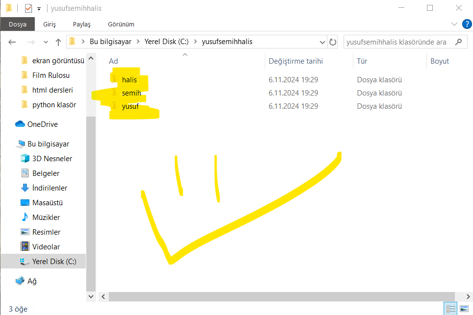
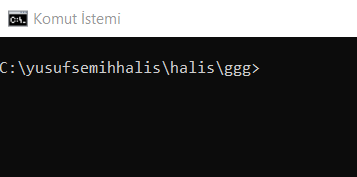
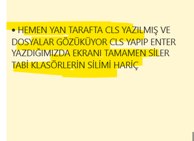
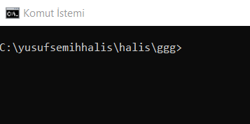
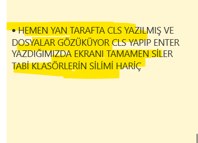
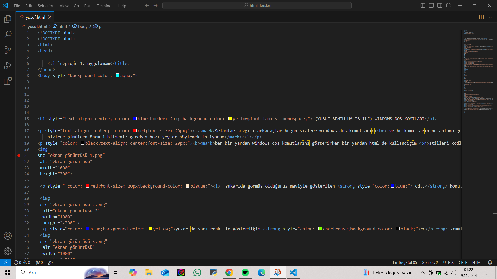
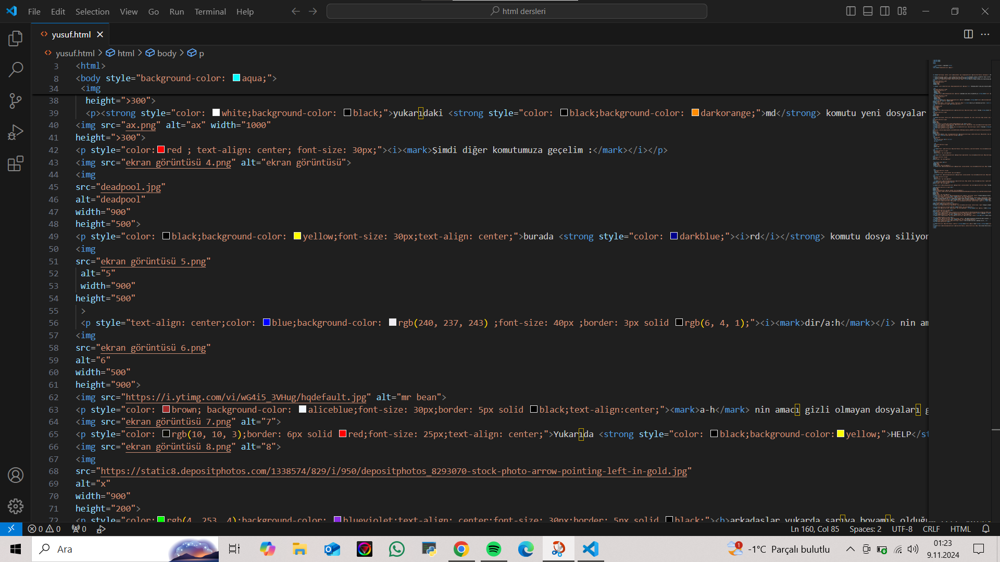
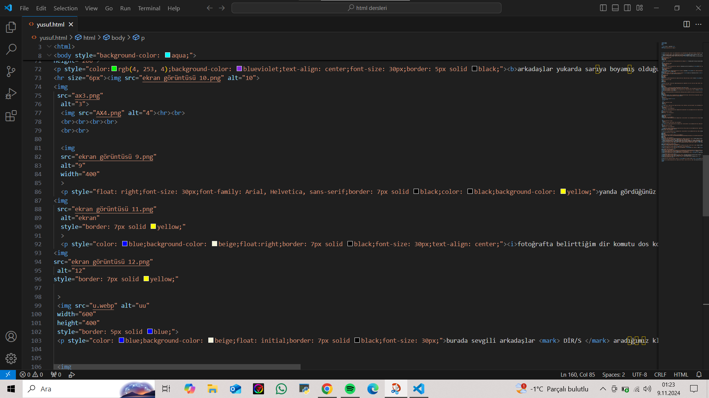
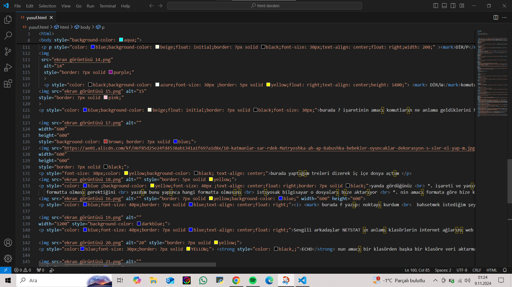
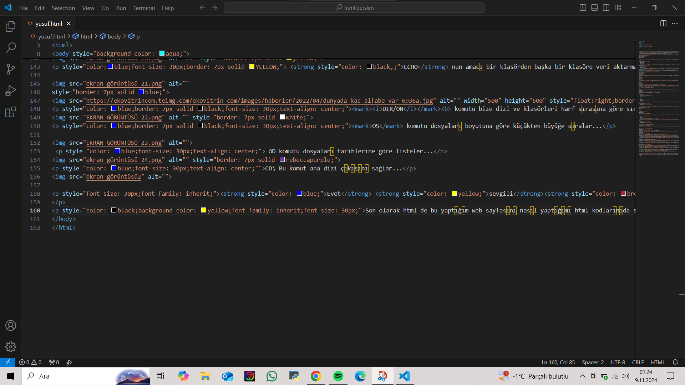

Selamlar sevgili arkadaşlar bugün sizlere windows dos komutlarını
ve bu komutların ne anlama geldiklerini göstermek istiyorum.
Tabi öncelikle
sizlere şimdiden önemli bilmeniz gereken bazı şeyler söylemek istiyorum
ben bir yandan windows dos komutlarını gösterirken bir yandan html de kullandığım
stilleri kodları nasıl yaptığımıda göstericem ben visual
studio code ile yapıyorum bu sayfayı bilginiz olsun arkadaşlar. Hadi daha fazla uzatmadan bilgi birikimimize geçelim
(html de "br=kalın vurgulu metin"yaparak bu yazıda kullandım)

Yukarıda görmüş olduğunuz maviyle gösterilen cd.. komutu bir üst klasöre çıkmamıza yardımcı olur.

yukarıda sarı renk ile gösterdiğim cd komutu ise kaydetmiş olduğum dosyaya giriş yapmamı sağlar arkadaşlar

yukarıdaki md komutu yeni dosyalar açmamızı sağlar. ayrıca yazdığım yazıda 2 tane boşluk oluşturarak 3 adet dosya elde etmiş oldum alttaki resimden görebilirsiniz...
300">Şimdi diğer komutumuza geçelim :

burada rd komutu dosya siliyor . daha önce açtığım halis dosyasını sildim.Aynı zamanda CLS komudunuda yazarsak temiz ekrançıkar tertemiz yapar CLS komudu bilgilendirme...

dir/a:h nin amacı gizli dosyaları göstermektir. dosyaların içinde saklanmış olan önemli dosyaları göstermek için fakat ben gizli bir dosya yapmadığım için bende gözükmedi.


a-h nin amacı gizli olmayan dosyaları gösterir zaten örnekte tarih saatini de ne zaman oluşturulduğunu görebilirsiniz

Yukarıda HELP yazdım . Arkadaşlar anlam olarak bütün dos komutlarını ve anlamlarını yazarak bize yardımcı olmak istiyo.

arkadaşlar yukarda sarıya boyamış olduğum tree yazısı bana oluşturduğum
veya var olan klasörün içindeki klasörleri soy ağaç modellemesi şeklinde aktarılmasın sağlar.
 



yanda gördüğünüz ver*vol boyadığım br yazı klasörün kodunu göstermektedir

fotoğrafta belirttiğim dir komutu dos komutlarının en önemlisidir
. Klasördeki tüm dizi ve klasörleri gösterir.

burada sevgili arkadaşlar DİR/S aradığımız klasörü bulmamızda yardımcı olur

DİR/P klasördeki dizilimleri sayfa halinde
listelememize yardımcı olur...

DİR/Wkomutu bize dizi
ve klasörleri yan yana sıralamamızı sağlar
fakat benim klasör resimde gördüğünüz
gibi alt alta sıralamış daha
az klasör yapıp deneyimlerseniz
sizde yan yana sıralanmış şekilde
gözükecektir arkadaşlar...

burada ? işaretinin amacı komutların ne anlama geldiklerini hangisini yazarsak bize ne vereceğini gösteren komuttur arkadaşlar.


burada yaptığım treleri dizerek iç içe dosya açtım

yanda gördüğünüz
*. işareti ve yanına hangi
formatta olması gerektiğini
yazdım bunu yapınca hangi formatta olmasını
istıyosak bilgisayar o dosyaları bıze aktarıyor
*. nin amacı formata göre bize klasör
çıkarmış olmasıdır.

burada f yazıp: noktayı kurdum
bahsetmek istediğim şey flash bellek
veya başka bir drivenizden komut yazmak isterseniz
: nokta koymayı unutmayın bunu yaptıktan sonra
istediğinize ulaşıcaksınız...

Sevgili arkadaşlar NETSTAT ın anlamı klasörlerin internet ağlarını web ağlarını gösterir..

ECHO nun amacı bir klasörden başka bir klasöre veri aktarmaktır veya bir klasöre bir veriyi aktarmamızda yardımcı olur...


DIR/ON komutu bize dizi ve klasörleri harf sırasına göre sıralaması için yardımcı olur...

OS komutu dosyaları boyutuna göre küçükten büyüğe sıralar...

OD komutu dosyaları tarihlerine göre listeler...

CD\ Bu komut ana dizi çıkışını sağlar...
Evet sevgiliarkadaşlar anlatmak istediklerrim bu kadardı fakat daha fazlasıda var .internet kaynaklarından kolayca daha pratik bilgiler alabilirsiniz.Umarım bu bilgiler işinize yaramıştır .Sizlere kolaylıklar dilerim .
Son olarak html de bu yaptığım web sayfasını nasıl yaptığımı html kodlarınıda sizlere göstericem ve sonlandırıcam .Teşekkür ederim ...
    